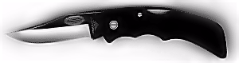
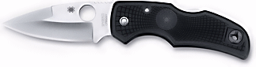

|
Since we offer knife self-defense training as part of our curriculum, I am often asked what knife I prefer. Actually, I cannot have what I prefer. Federal, state, and local laws prohibit carrying really effective weapons, so those interested in carrying knives for self-defense must settle for something less.
Without addressing all of the issues related to knives and knife self-defense here, let me say that after considering the wide assortment of knives available to the law-abiding citizen, I settled on the Slick Clip II (MC-11) from Paragon Cutlery Company. Although available in tanto and serrated versions, I prefer the nonserrated clip point (3.125-inch blade, 4 inches closed). The blade is made from 8A steel with a right-handed thumb depression opener. 1
Moreover, this little lockback comes with a REALLY well-designed black Zytel handle featuring a checkered grip, molded pocket clip, and lanyard hole. (The molded clip is especially nice. Located at the end of the handle – a tip-up design – it is barely visible when inserted in the waistband or pocket.) All of this sounds like something you'd find in a brochure. So let me share specific reasons why I like this inexpensive little beauty. 2

I am no smith, but I can say that this blade is very sharp, and since I do not whittle with it, it retains its edge very well. Personally, I prefer a plain edge because serrated edges tend snag on a variety of materials. At just a fraction over 3 inches, the blade is short, and while I'd like it to be a half an inch longer, its unassuming length is really an asset for legal civilian carry. I say this because, contrary to what you may hear about knife laws, the only thing consistent about them is their inconsistency, and the only thing more inconsistent than that is the arbitrary way those laws are enforced. Recognizing this, it is generally agreed that a three-inch blade will pass muster most of the time. 3
I own other larger, higher quality (and more expensive) knives, so why do I stick with my little slick clip? Two words: THE HANDLE. Sure, if I could design my own locking folder it would be different in some respects. It would have a better lock, and I would use a drop-point blade instead of the clip point simply because it looks less menacing (more like a tool). But I would not (repeat, NOT) change the basic handle design. You may be asking, "Let's see if I have this right. This guy will settle for less than the best when it comes to blade and lock, as long as he has this kind of handle?" Absolutely, and here's why.
Technicaly, since the blade is short, it is better suited for slashing than for thrusting. It is sufficiently long to thrust the neck, but it cannot penetrate deep enough on your largest target – the body. Thrusting the body demands either a guard or handle that is beefier up near the blade. This prevents the wielder's hand from slipping off the handle and onto the blade (something I've seen supposed knife "experts" do). 4 Slashing, on the other hand, requires a handle that prevents the weapon from pulling out of the hand in exactly the opposite direction. A slashing weapon, then, must have greater mass toward the butt end of the handle. The Slick Clip has exactly that.
But there is another, broader reason why a handle is so important. Whatever your choice in personal-defense weaponry (firearm, impact- or edged-weapon), two factors override all other considerations: weapon availability and retention. Obviously, if you cannot lay your hands on your weapon, it is useless. Equally important, if you cannot retain it, then it is likewise useless. Your favorite knife may have the longest and sharpest blade available. It may have the finest lock money can buy. But if you cannot keep it in your hand (my Boker Infinity is a good example of that), then it might as well be a spoon. The most expensive knife money can buy is worth less than zero if it is lying on the ground 10 feet away from you. The Slick Clip's well-designed handle is one one that will not easily slip from your hand. Its well-placed finger grooves, subtle taper down from handle to blade (a real plus when slashing), and tip-up clip location that gives it the feel of a larger-handled knife, make this one very easy-to-hold-onto little knife. From that perspective, the Slick Clip II is worth its weight in gold – or at least in medical bills  . .
Current Recommendation
Although the clip will absolutely ruin your clothing and the handle is not as good as the Paragon, Spyderco's C41PBK Native meets all the other requirements I have for a good self-defense folder (and it's a really good looking knife to boot). The knife opens easily, the blade is excellent, the handle fits the hand well, and it can be purchased for under $50.00. I doubt I will ever find the perfect self-defense folder, but this one comes the closest.

(We are not affiliated with the Paragon Cutlery Company or Spyderco in any way. Nor are we in any way compensated for this endorsement. Finally, since I am no knife "expert", who'd pay for my two cents anyway? 4 )
|
Footnotes:
-
The fact that this little beauty is inexpensive is a real plus. If you lose this knife, for whatever reason, the loss (at least financially) is minimal.
[Return to reference point]
-
My only real complaint about this little gem is its quick open thumb depression. It may be the size of my thumb, but I've yet to become comfortable with this opening mechanism. However, since it opens quite nicely with inertia, the thumb depression's weak design for single-handed opening is really a non-issue.
[Return to reference point]
-
I cannot emphasize this enough: It is imperative that you check the various laws in you locale. For example, I have been told that in the great state of Georgia, two inches, not three, is legal for concealed carry – that is, in your pocket. Again, check the laws in your locale.
[Return to reference point]
-
Since ex comes from a Latin root meaning has been, and a spurt is a drip under pressure, does that make an expert a has-been who drips under pressure?
[Return to reference point]
Note: Most folders require some lubricant. For my money, the best knife lubricant I've found
is made by White Lightning. They manufacture excellent gear, gun, and, now, knife lubricant.
|